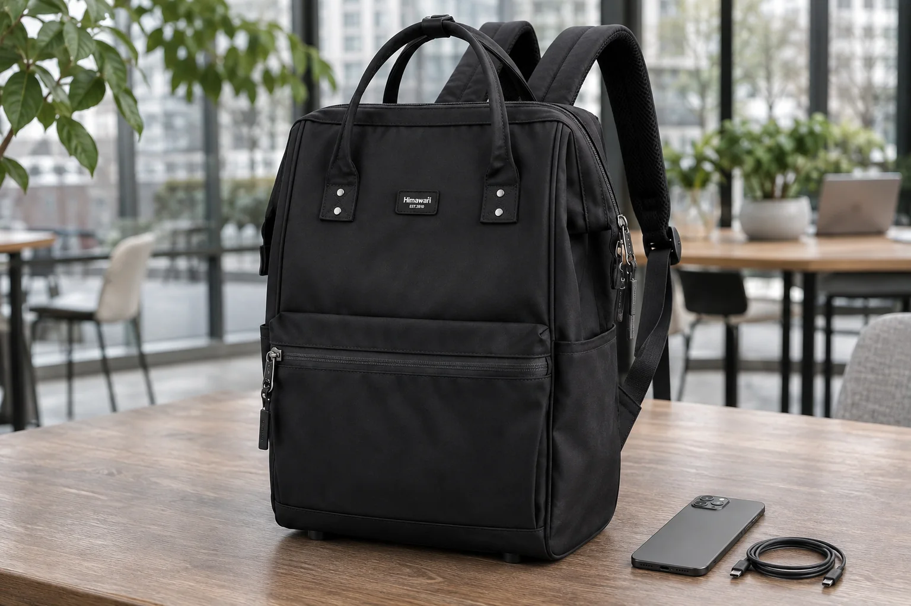
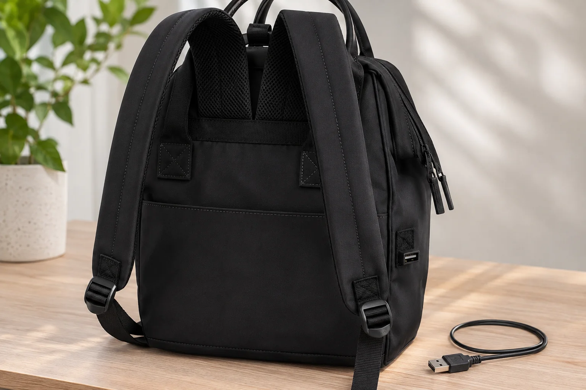
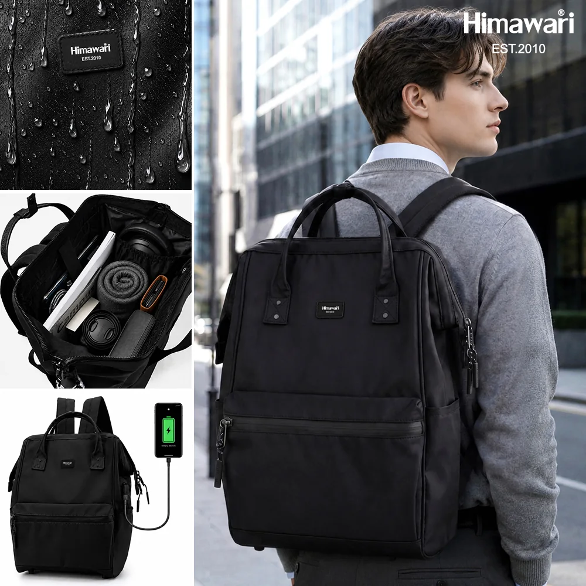

USB 포트가 있는 백팩, 보조배터리도 들어 있다는 뜻일까

백팩 옆에 휴대전화가 연결된 상품 사진을 보면 가방만 사면 바로 충전할 수 있을 것 같습니다. 그러나 연결부가 있다는 정보와 전원이 포함된다는 정보는 다릅니다. 가방 안팎을 이어 주는 부분, 따로 연결하는 케이블, 전원을 공급할 기기를 나누어 확인해야 실제 구매 구성이 남습니다. 배터리 그림이 켜진 휴대전화 사진 한 장만으로 그 구성을 모두 정하기는 어렵습니다.
No.1884 블랙의 실제 대표 사진에는 가방 옆에서 휴대전화로 이어진 케이블 연출이 들어 있습니다. 공개 상세 자료도 보조배터리를 연결하는 USB 커넥터가 장착돼 있다고 안내합니다. 이는 연결부에 관한 설명이며 보조배터리를 함께 제공한다는 문구는 아닙니다.
같은 대표 사진은 큰 입구와 두 손잡이, 앞면의 긴 가로 지퍼도 보여줍니다. 공개 외부 크기는 가로 30 × 세로 45 × 폭 20cm입니다. 이 글에서는 사진에 보이는 연결부를 출발점으로 삼되 보조배터리 포함 여부나 단자의 전기 사양은 별도 확인 항목으로 남깁니다.
사진 속 연결을 구매 구성으로 옮겨 적기
사진에 등장하는 가방과 휴대전화가 모두 판매 구성에 포함되는 것은 아닙니다. 케이블도 마찬가지입니다.
판매 목록에서 가방에 고정된 외부 포트와 안쪽 연결 케이블이 어떤 구성으로 제공되는지 확인합니다. 휴대전화에 꽂는 선이 별도로 필요한지도 봅니다. 사진의 선 하나를 보고 안쪽부터 바깥쪽까지 필요한 케이블이 모두 들어 있다고 적지는 않습니다.
예를 들어 구매 메모를 가방의 연결부, 포함 케이블, 별도 전원, 휴대전화용 케이블로 나눌 수 있습니다. 실제 안내에서 확인한 항목만 채웁니다. 보조배터리를 제공한다고 명시한 자료를 찾지 못했다면 미포함이라고 단정하기보다 구성품 질문으로 남깁니다. 사진에 전원이 보이지 않는다는 것과 주문 구성에 전원이 없다는 것은 근거가 다르기 때문입니다.
지금 가지고 있는 보조배터리를 쓸 계획이라면 그 기기의 출력 단자와 가방 쪽 연결을 함께 봅니다. USB라는 이름 하나로 모든 커넥터가 같은 모양이 되지는 않습니다. No.1884에 실제 달린 단자의 형식과 포함 케이블의 양 끝을 확인한 뒤 자신의 기기와 이어질 구성을 정합니다. 작은 사진을 확대해 보이는 윤곽만으로 단자 이름을 확정할 필요는 없습니다.

포트 모양과 충전 속도는 다른 정보
휴대전화의 충전 표시가 들어간 연출 사진은 실제 출력 수치를 보여 주는 시험 결과가 아닙니다. 포트가 보인다는 이유로 고속충전이나 특정 전압·전류 지원을 약속할 수는 없습니다. 전원 기기와 케이블, 연결 경로가 각각 어떤 조건을 지원하는지 확인할 자료가 필요합니다. 구매하려는 백팩의 설명에 없는 수치를 다른 가방의 안내에서 가져오지 않습니다.
집에 있던 케이블을 연결할 생각이라면 단순히 끝이 들어가는지만 비교하지 않습니다. 가방의 연결부와 케이블에 안내된 용도, 전원 기기와 휴대전화의 사용 조건이 이어지는지 봅니다. 호환 정보가 없다면 판매처에 확인할 부분입니다. 이 글은 임의의 케이블 조합을 시험하거나 단자를 개조하는 방법을 안내하지 않으며 해당 제품과 기기의 사용 설명을 기준으로 삼습니다.
충전용이라는 설명을 데이터 연결 가능으로 넓혀 읽지도 않습니다. 사진에서 보이는 포트와 선이 어떤 역할로 제공되는지 확인해야 합니다. 노트북과 휴대전화 사이에서 파일을 옮기려는 용도라면 그 기능이 제품 안내에 있는지 별도로 묻습니다.
휴대전화의 전원 표시 하나로 연결 규격과 데이터 기능까지 판단할 수는 없습니다. 쓰려는 목적이 다르면 필요한 답도 달라집니다.

연결한 뒤에도 가방은 열고 벗어야 한다
연결 구성이 맞더라도 실제 사용할 동작을 생각할 일이 남습니다. 휴대전화를 손에 든 채 백팩을 벗으면 케이블이 가방과 함께 움직입니다. 가방을 책상에 내려놓거나 휴대전화를 다른 주머니로 옮길 때 어느 쪽 연결을 먼저 정리할지 해당 기기의 사용 안내에 맞춰 봅니다. 케이블 길이가 길다는 사실만으로 모든 자세에서 여유가 생기는 것은 아닙니다.
No.1884의 큰 입구와 앞주머니를 사용할 때에도 선의 경로를 구별해 볼 수 있습니다. 안쪽 전원이나 케이블을 어느 공간에 둘 수 있는지 보려면 실제 내부 구성과 관련 안내가 필요합니다. 공개 외부 크기로 보조배터리용 주머니의 치수를 계산하거나 사진에서 안 보이는 전용 수납칸을 만들어 설명하지 않습니다. 수납 위치가 안내돼 있다면 그 조건을 확인하고 여닫는 부분과 선이 겹치는지 살펴봅니다.
연결하지 않는 날의 상태도 구매 질문에 넣을 만합니다. 외부 포트를 쓰지 않을 때 어떻게 두는지 확인합니다. 케이블을 분리할 수 있는지, 원래 부품을 빼지 않고 정리하는 방법이 있는지도 묻습니다. 쓰지 않는 선을 지퍼 틈으로 억지로 빼서 정리하기보다 해당 가방에서 안내한 방법을 찾습니다. 부품을 분리할 수 있는지 확인하지 않은 상태에서 먼저 당겨 빼는 일도 피합니다.
관리와 구성 확인을 끝낸 뒤 주문하기
가방을 부분 관리할 때는 연결 부품이 있는 위치와 관리 안내를 함께 읽습니다. No.1884의 공개 안내는 부드러운 천을 이용한 부분 관리와 그늘 건조이며 세탁기와 건조기 사용을 피하라고 적혀 있습니다.
USB 연결 장면이 있다는 사실로 포트의 방수 성능을 추정하지 않습니다. 전기 부품의 관리와 사용 조건은 해당 제품에서 확인한 안내를 따라야 합니다.
주문 전 남길 질문은 구체적일수록 답을 비교하기 좋습니다. 이 블랙 옵션에 제공되는 연결부와 케이블은 무엇인지, 전원 기기는 포함되는지, 양쪽 단자의 형식과 지원 용도가 무엇인지 묻습니다. 사진 속 휴대전화와 별도 케이블이 연출 소품이라면 구매 목록에서 빼고 실제로 준비할 항목으로 옮겨 적습니다. 제품을 받은 뒤에도 주문한 구성과 도착한 부품을 맞춰 볼 수 있습니다.
USB 포트는 백팩을 고르는 한 항목입니다. 확인된 연결 구성이 평소 사용하는 기기와 맞는지 살피고 그다음에는 원래 필요한 크기와 개폐 구조를 함께 비교합니다. 가방 안에서 전원을 어떻게 연결할지 답을 얻지 못했다면 충전 장면에 기대어 결정을 서두를 필요는 없습니다. 제공되는 부품과 따로 준비할 부품을 구별한 구매 메모가 있어야 사진의 인상과 실제 주문 구성을 맞출 수 있습니다.